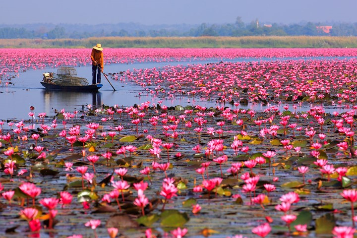

1
ทะเลบัวแดง บึงหนองหาน
อำเภอกุมภวาปี · ทะเลบัวอันซีน
ทุ่งบัวแดงผืนใหญ่กลางบึงหนองหานกว่า 2 หมื่นไร่ ดอกบัวสีชมพูจะบานเต็มที่ช่วงหน้าหนาว ยิ่งล่องเรือช่วงเช้า ๆ บรรยากาศยิ่งสวย ได้เห็นนกน้ำและควายลงเล่นน้ำแบบธรรมชาติสุด ๆ
เปิดแผนที่ไปทะเลบัวแดง

ทะเลบัวแดง